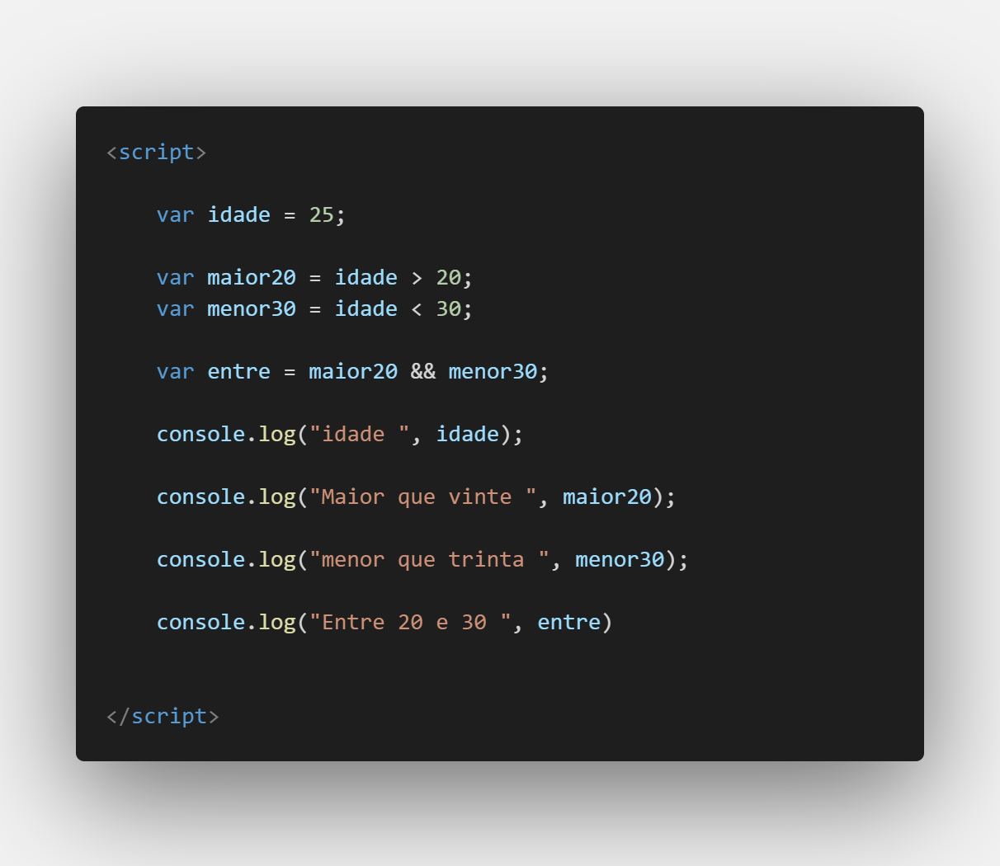
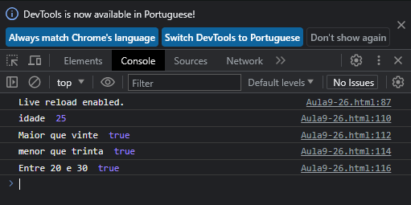
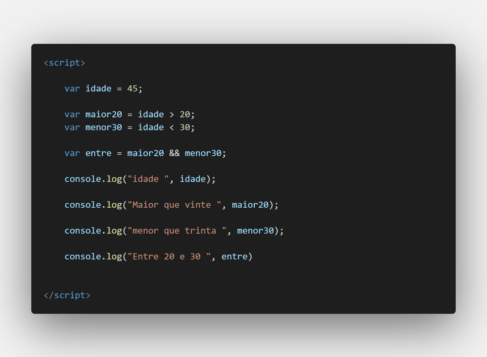
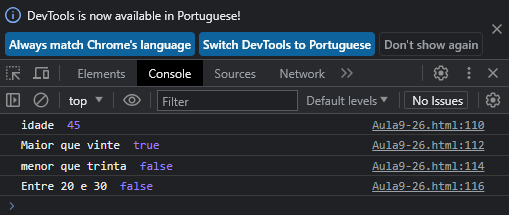

Aula 9 - Operadores Lógicos em JavaScript
Os operadores lógicos em JavaScript são utilizados para realizar operações lógicas entre valores booleanos (verdadeiro ou falso). Eles permitem combinar ou inverter valores booleanos para criar expressões lógicas mais complexas.
AND Lógico (`&&`)
O operador AND lógico retorna `true` apenas se ambos os operandos forem `true`.
console.log(true && true); // true
console.log(true && false); // false
console.log(false && true); // false
console.log(false && false); // false
OR Lógico (`||`)
O operador OR lógico retorna `true` se pelo menos um dos operandos for `true`.
console.log(true || true); // true
console.log(true || false); // true
console.log(false || true); // true
console.log(false || false); // false
NOT Lógico (`!`)
O operador NOT lógico inverte o valor booleano de um único operando.
console.log(!true); // false
console.log(!false); // true
Os operadores lógicos podem ser usados não apenas com valores booleanos diretos, mas também com expressões que produzem valores booleanos. Além disso, você pode combinar esses operadores para criar expressões lógicas mais complexas.
let age = 25;
let hasLicense = true;
let canDrive = age >= 18 && hasLicense; // O motorista deve ter pelo menos 18 anos e ter uma licença válida
Operadores lógicos são uma parte essencial da lógica de programação e são amplamente usados em construções condicionais, como declarações `if` e loops. Eles permitem que você tome decisões com base em múltiplas condições e crie comportamentos complexos em seus programas.
Codando



